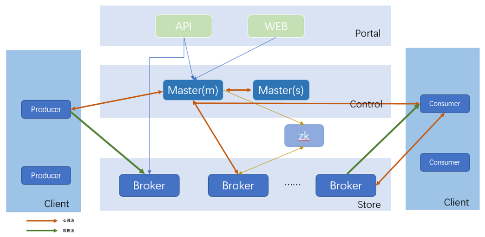

Apache InLong
Apache InLong（应龙）是一个一站式海量数据集成框架，将数据采集、聚合、存储、排序数据处理的全流程整合在一起，提供自动、安全、可靠和高性能的数据传输能力，同时支持批和流，方便业务构建基于流式的数据分析、建模和应用。
Apache InLong - a one-stop, full-scenario integration framework for massive data.
架构
- 通过 Flink Source/Sink 支持数据采集和存储；

模块
inlong-agent
数据采集Agent。从指定目录或文件读取常规日志、逐条上报
inlong-dataproxy
支持数据发送阻塞和落盘重发，可以将接收到的数据转发到不同的MQ（消息队列）
inlong-tubemq
腾讯自研的消息队列服务，用户大数据场景下海量数据的高性能存储和传输
inlong-sort
对从不同MQ消费到的数据进行ETL处理，然后汇聚并写入Hive、ClickHouse、HBase、Iceberg等存储系统。
或者，对从不同数据源读取的数据进行ETL处理，然后写入到指定的MQ（从ExtractNode写入LoadNode）
inlong-manager
提供元数据、任务流、权限、OpenAPI等的数据服务管控能力
inlong-dashboard
管理数据接入的前端页面
inlong-audit
对InLong系统的Agent、DataProxy、Sort模块的入流量、出流量进行实时审计对账
组件介绍
Agent
支持数据源
File、Sql、Binlog、Metrics等多种异构数据源
架构介绍

InLong Agent本身作为数据采集框架，采用channel + plugin架构构建。将数据源读取和写入抽象成为Reader/Writer插件，纳入到整个框架中。
- Reader：Reader为数据采集模块，负责采集数据源的数据，将数据发送给channel。
- Writer： Writer为数据写入模块，负责不断向channel取数据，并将数据写入到目的端。
- Channel：Channel用于连接reader和writer，作为两者的数据传输通道，并起到了数据的写入读取监控作用
采集分类
文件
文件采集包含如下功能： 用户配置的路径监听，能够监听出创建的文件信息 目录正则过滤，支持YYYYMMDD+正则表达式的路径配置 断点重传，InLong-Agent重启时，能够支持自动从上次读取位置重新读取，==保证不重读不漏读==。
Sql
这类数据是指通过SQL执行的方式 SQL正则分解，转化成多条SQL语句 分别执行SQL，拉取数据集，拉取过程需要注意对mysql本身的影响 执行周期，这种一般是定时执行。
Binlog
这类采集通过配置mysql slave的方式，读取binlog，并还原数据 需要注意binlog读取的时候多线程解析，多线程解析的数据需要打上顺序标签 代码基于老版本的dbsync，主要的修改是将tdbus-sender的发送改为推送到agent-channel的方式做融合。
安装配置
监控指标
DataProxy
充当采集端到消息队列的桥梁，当DataProxy收到消息时，首先发送到Memory Channel中进行压缩，并使用本地的Producer往后端消息队列发送数据。
当消息队列异常，出现发送发送失败时，DataProxy会将消息缓存到Disk Channel，即本地磁盘中。
DataProxy整体架构基于Apache Flume，扩展了Source层和Sink层，并对容灾做了优化处理。
架构介绍

- Source层开启端口监听，通过netty server实现。解码之后的数据发到channel层
- channel层有一个selector，用于选择走哪种类型的channel，如果memory最终满了，会对数据做落地处理
- channel层的数据会通过sink层做转发，这里主要是将数据转为TDMsg1的格式，并推送到cache层（这里用的比较多的是tube）
安装配置
DataProxy 支持配置化的 source-channel-sink，配置方式与 flume 的配置文件结构类似。配置文件放在 dataproxy-*.conf 文件中，目前支持 dataproxy-pulsar.conf 和 dataproxy-tube.conf 两种，用于区分不同的中间件类型，具体类型可以在启动时指定，默认（未指定时）使用 dataproxy-pulsar.conf 作为配置文件
监控指标
DataProxy提供了JMX方式的监控指标Listener能力，用户可以实现MetricListener接口，注册后可以定期接收监控指标，用户选择将指标上报自定义的监控系统
TubeMQ
架构

Portal：负责对外交互和运维操作的Portal部分；
Master：负责集群控制的Control部分，该部分由一个或多个Master节点组成。Master支持HA部署，实现节点间心跳保活、实时热备切换；
Broker：每个Broker节点对本节点内的Topic集合进行管理；
Client：负责数据生产和消费的Client部分，该部分以Lib形式对外提供。消费端支持Push、Pull两种数据拉去模式。数据消费行为支持顺序和过滤消费两种。
Zookeeper：负责offset存储的zookeeper部分
Sort
基于Apache Flink的ETL系统，支持多种数据源，支持简单的字段抽取，支持多种存储系统。
既支持和Manager一起配合使用，通过Manager进行系统元数据的管理，也可以在Flink环境下独立运行。
| Type | Service |
|---|---|
| Extract Node | Pulsar |
| MySQL | |
| Kafka | |
| MongoDB | |
| PostgreSQL | |
| Transform | String Split |
| String Regular Replace | |
| String Regular Replace First Matched Value | |
| Data Filter | |
| Data Distinct | |
| Regular Join | |
| Load Node | Hive |
| Kafka | |
| HBase | |
| ClickHouse | |
| Iceberg | |
| PostgreSQL | |
| HDFS | |
| TDSQL Postgres |
安装部署
Manager
统一管理平台，提供各基础配置（如数据流配置、消费配置、集群管理等）的维护入口。
用户可以哦通过管理平台创建数据采集任务、查看指标数据等。
架构

Dashboard
InLong的管控端
需要先安装nodejs > = 12.0
Audit
InLong审计是独立于InLong的一个子系统，对InLong系统的Agent、DataProxy、Sort模块的入流量、出流量进行实时审计对账。对账的粒度有分钟、小时、天三种粒度。
通过审计对账，可以清晰的了解InLong 各个模块的传输情况，以及数据流是否有丢失或者重复。
- 审计SDK嵌套在需要审计的服务，对服务进行审计，将审计结果发送到审计接入层。
- 审计接入层将审计数据写到MQ(Pulsar或者TubeMQ)。
- 分发服务消费MQ的审计数据，将审计数据写到MySQL、Elasticsearch。
- 接口层将MySQL、Elasticsearch的数据进行封装。
- 应用场景主要包括报表展示、审计对账等等。
审计维度
| 机器ip | 容器ID | 线程ID | 日志时间(分钟) | 审计ID | inlong_group_id | inlong_stream_id | 条数 | 大小 | 传输时延(ms) |
|---|---|---|---|---|---|---|---|---|---|
功能插件（for插件开发人员）
Agent插件
InLong Agent支持以插件的方式扩展新的采集类型
概念和模型
InLong Agent是一个数据采集框架，采用Job+Task架构模型，将数据源读取和写入抽象成为Reader/Sink插件
- Job：Job是Agent用以描述从一个源头到一个目的端的同步作业，是Agent数据同步的==最小业务单元==。
- Task：Task是把Job拆分得到的==最小执行单元==。
Task包含组件(和flume组将类似)：
- Reader: 数据采集模块，负责采集数据源的数据，并发送给Channel。
- Sink：数据写入模块，负责不断向Channel取数据，并将数据写入目的端。
- Channel：连接Reader和Sink，数据传入通道，并可以监控数据的写入和读取。
Job/Task/Reader/Sink/Channel 概念可以用下图表示：

工作流程：
- 用户提交 Job（通过 manager），Job 中定义了需要使用的 Source, Channel, Sink（通过类的全限定名定义）
- 框架启动 Job，通过反射机制创建出 Source
- 框架启动 Source，并调用 Source 的 Split 接口，生成一个或者多个 Task
- 生成一个 Task 时，同时生成 Reader（一种类型的 Source 会生成对应的 reader)，用户配置的 Channel 以及用户配置的 Sink
- Task 开始执行，Reader 开始读取数据到 Channel，Sink 从 Channel 中取数进行发送
- Job 和 Task 执行时所需要的所有信息都封装在 JobProfile 中
开发流程：
- 首先开发 Source , 实现 Split 逻辑，返回 Reader 列表
- 开发对应的 Reader ，实现读取数据并写入到 Channel 的逻辑
- 开发对应的 Sink , 实现从 Channel 中取数并写入到指定 Sink 中的逻辑
功能实现demo：
Sort插件
基于Apache Flink SQL的ETL服务。
组件概念：
ExtractNode：数据同步的来源端抽象
LoadNode：数据同步的去向端抽象
功能实现demo：
Dashboard插件
功能实现demo：
Manager插件
扩展读取节点
- 首先需要在 Sort 组件内支持该数据源，详情参考 Sort 插件
- 在枚举类
org.apache.inlong.common.enums.TaskTypeEnum中增加对应的枚举 - 在枚举类
org.apache.inlong.manager.common.enums.SourceType中同样增加对应枚举 - 在
org.apache.inlong.manager.common.pojo.source路径下创建文件夹，创建对应实体类 - 在
org.apache.inlong.manager.service.source路径下，创建对应工具类 - 支持数据源到ExtractNode的转换函数，参考
org.apache.inlong.manager.service.sort.util.ExtractNodeUtils
扩展写入节点
- 首先需要在 Sort 组件内支持该数据源，详情参考 Sort 插件
- 在枚举类
org.apache.inlong.manager.common.enums.SinkType中增加对应枚举 - 在
org.apache.inlong.manager.common.pojo.sink路径下创建文件夹, 创建对应实体类 - 在
org.apache.inlong.manager.service.sink路径下创建对应工具类 - 支持数据源到LoadNode的转换函数，参考代码
org.apache.inlong.manager.service.sort.util.LoadNodeUtils